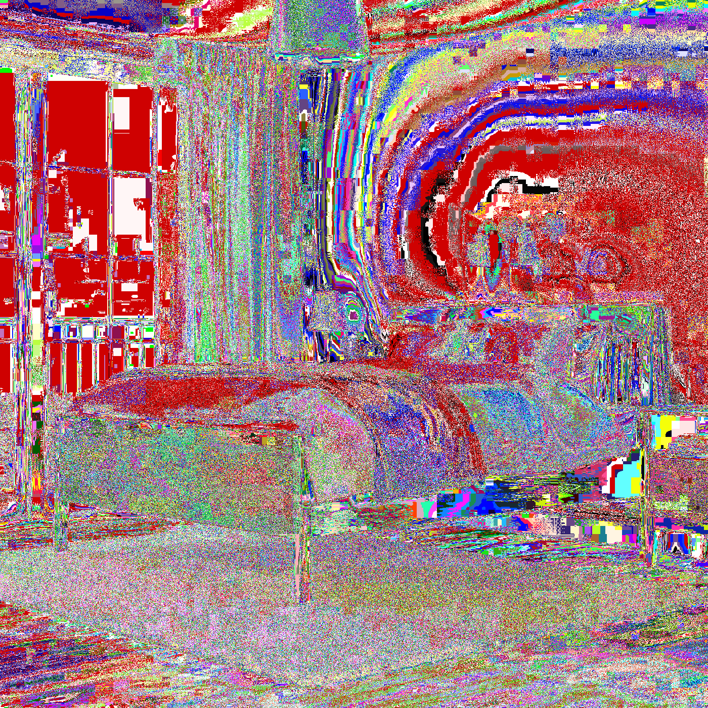
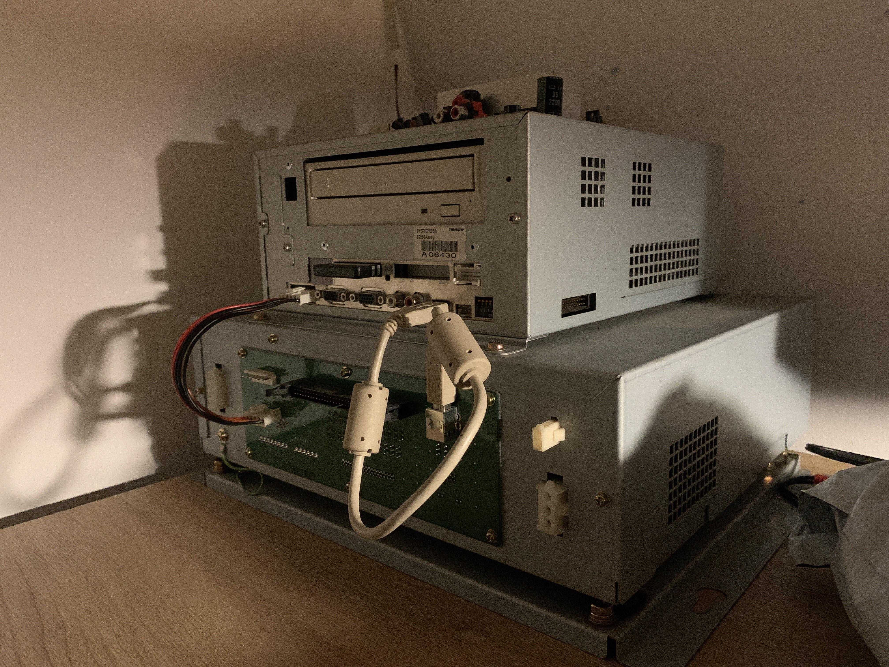

It was the day of the March 31st... I had woken up from my Bed  and went to the institution.
There was a large excitement in the air, since I knew what was going to happen. The System 256 with
Taiko no Tatsujin 9 will arrive this day! As I arrived at home, I saw the box. It was of a substantial size
And I opened it. Here are images of stuff...

It was also really well packaged - There was loads of foam covering the 256 which isn't really visible in any of
these images, but it is there.
After the gracious unboxing, I carried the very heavy System 256 up the stairs ultimately carefully, in order not to break it..
Having it situated beautifully on my desk, I felt a feeling of ultimate completion - My life aim is one step closer to completion.
